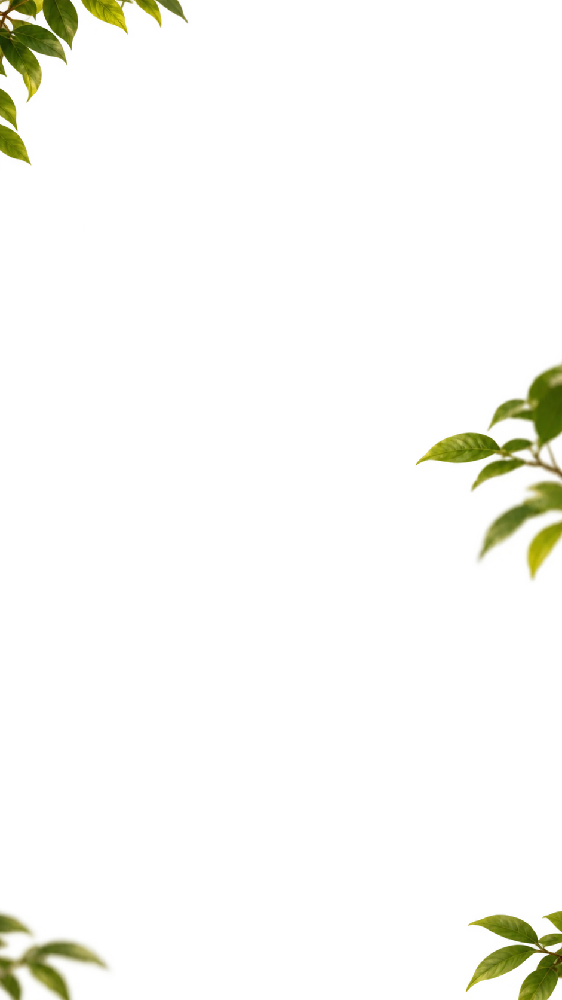
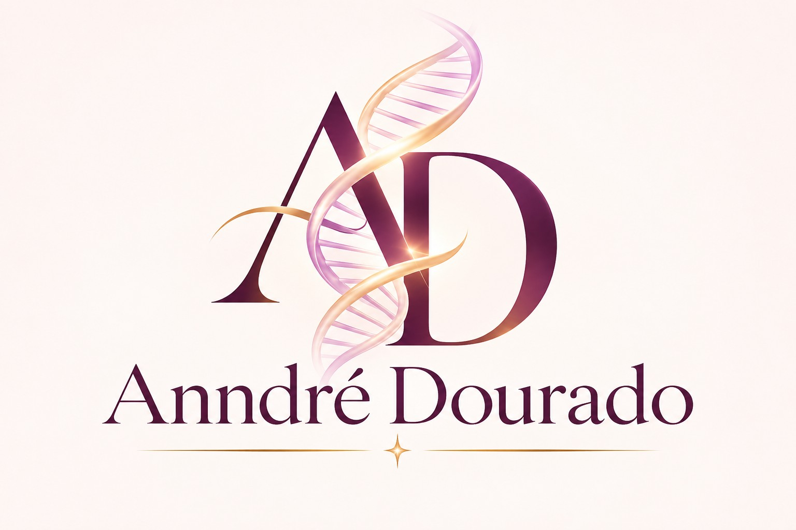
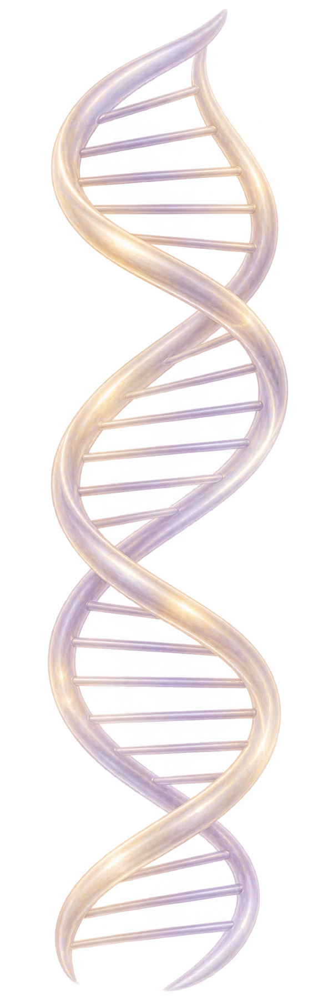
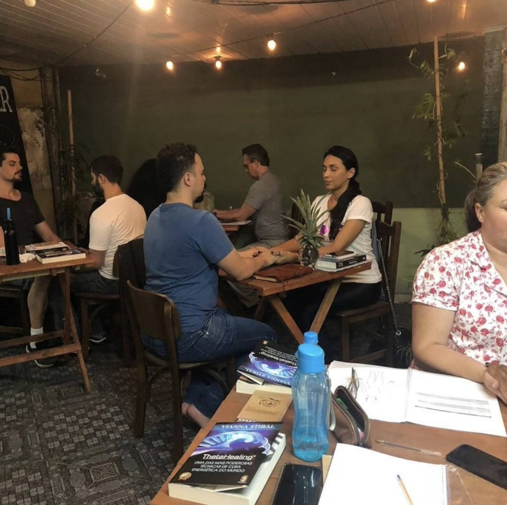
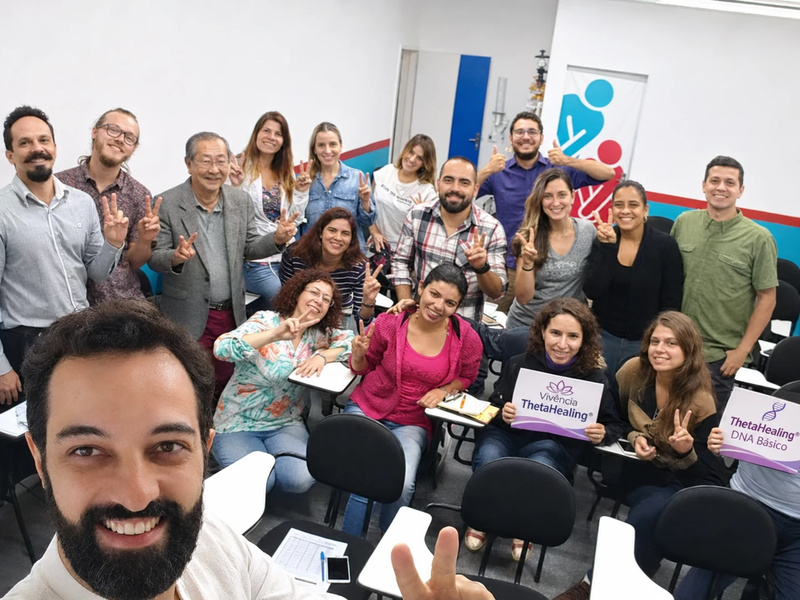
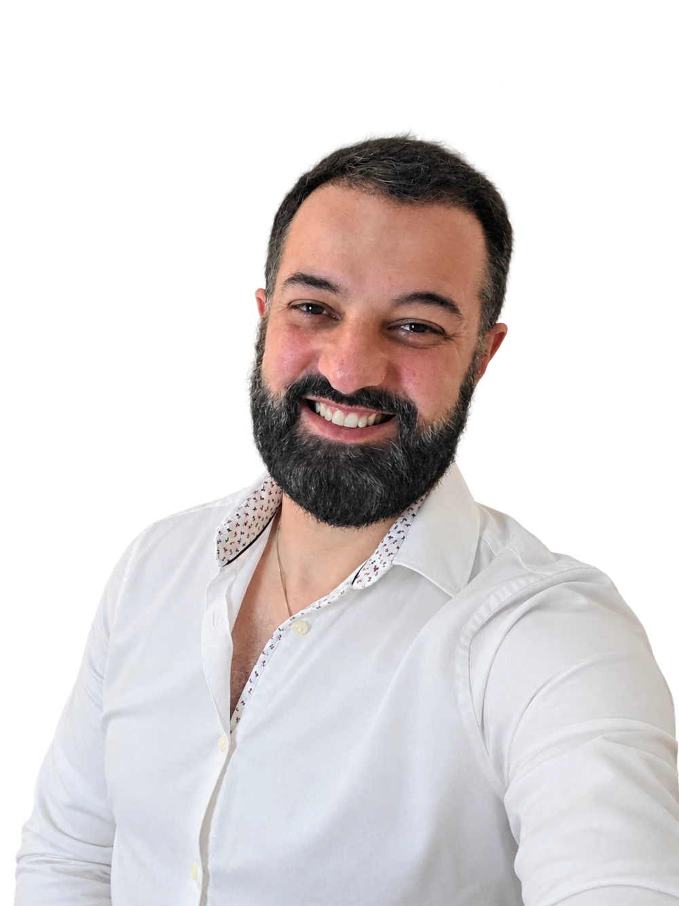
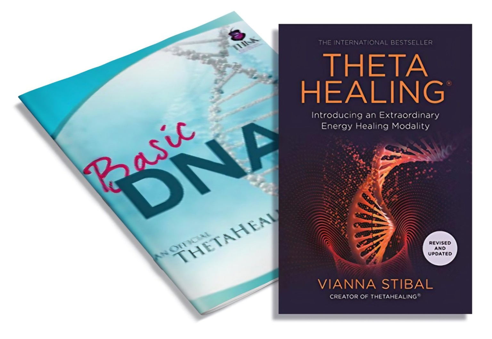
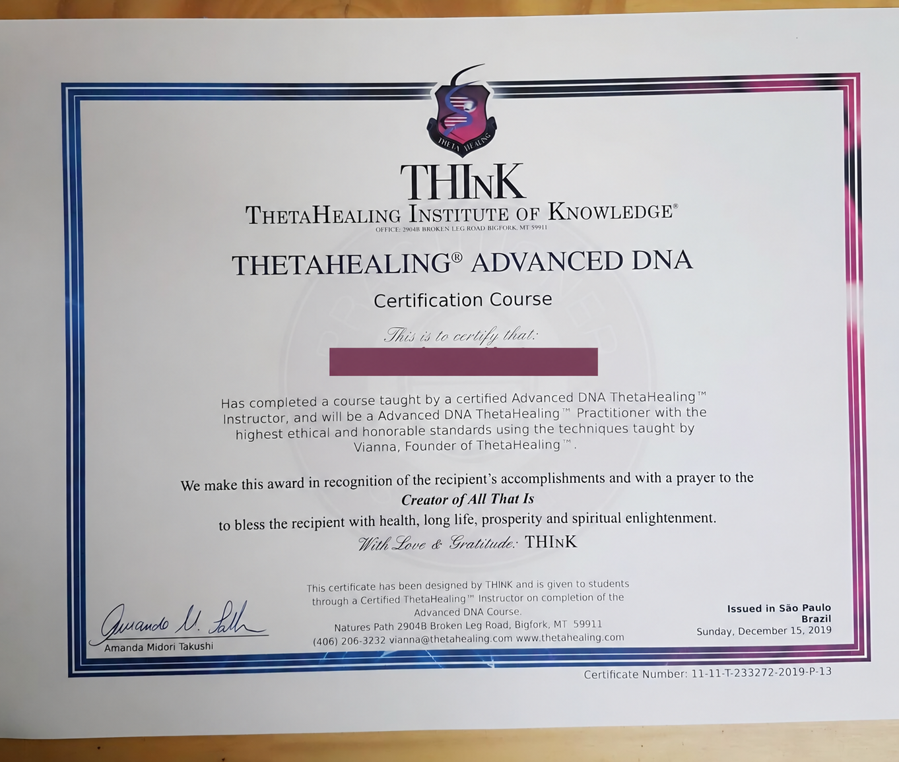

Voltei para casa mais leve e mais atenta ao que sinto, aquela sensação de confusão diminuiu muito.


DNA BásicoVocê está fazendo escolhas. Ou está repetindo padrões?
Descubra, em 3 dias, como identificar crenças limitantes e trabalhar os padrões que influenciam suas escolhas.
Descubra, em 3 dias, como identificar crenças limitantes e trabalhar os padrões que influenciam suas escolhas.

A DESCOBERTA
E se existisse outra maneira de trabalhar os seus padrões?
No ThetaHealing® DNA Básico, você aprende ferramentas para trabalhar crenças, desenvolver sua percepção e começar a praticar em você e com outras pessoas.
Três dias de imersão. Aprendizado prático. Certificação internacional oficial.
- Data04 a 06 de dezembro de 2026.Sexta-feira: 18h às 20h30.Sábado e domingo: 9h às 17h.
- ModalidadeSexta online ao vivo; sábado e domingo presenciais ou online ao vivo.
- LocalizaçãoSão Paulo, região da Avenida Paulista, próximo ao metrô.
- CertificaçãoInternacional oficial ThetaHealing®.
Reconhecer
Você percebe o padrão. Mas, na hora, faz tudo de novo.
Diz “sim” quando gostaria de dizer “não”. Adia uma decisão por medo de errar. Muda de situação, mas encontra a mesma dificuldade.
Você reconhece o que acontece. Talvez até tenha prometido a si mesmo que, da próxima vez, faria diferente.
Mas nem sempre reconhecer um padrão é suficiente para mudar a maneira como reagimos.
Dificuldade de colocar limites
Você sabe o que gostaria de dizer, mas teme desagradar.
Medo de se posicionar
A vontade existe. Mas a insegurança pesa na decisão.
Escolhas que se repetem
O cenário muda. A sensação de estar no mesmo lugar permanece.
E se o próximo passo não fosse tentar mais uma vez — mas investigar o que sustenta essas respostas?
Existe uma forma de começar essa investigação.
Quero descobrir comoO MÉTODO
Como o ThetaHealing® trabalha as crenças?
O ThetaHealing® é uma técnica de meditação e desenvolvimento pessoal que utiliza uma meditação para buscar o estado de ondas cerebrais theta, associado ao relaxamento e à criatividade.
Dentro da metodologia, esse estado meditativo é utilizado para explorar informações subconscientes, investigar crenças limitantes e realizar procedimentos de mudança de crenças e sentimentos.
Na prática, você aprende a observar situações, aprofundar perguntas e trabalhar as crenças que podem estar relacionadas às suas escolhas e reações.
- 01
Identificar
Investigue o que está por trás de um padrão e reconheça crenças relacionadas a ele.
- 02
Trabalhar
Aprenda procedimentos de mudança de crenças e os chamados downloads de sentimentos.
- 03
Praticar
Experimente as ferramentas em suas próprias questões e em exercícios com outras pessoas.
Para quem é esta imersão?
Para quem deseja aprofundar o autoconhecimento, compreender melhor seus padrões e aprender uma prática de desenvolvimento pessoal.
E também para terapeutas e profissionais que desejam iniciar a formação oficial em ThetaHealing® e incorporar novas ferramentas à sua atuação.
Você pode começar mesmo sem experiência anterior.
O APRENDIZADO
Você não vai apenas conhecer a técnica. Vai aprender a praticá-la.
No DNA Básico, cada ferramenta é apresentada por meio de explicações, demonstrações e exercícios orientados.
Você começa investigando suas próprias questões e aprende também a realizar práticas com outra pessoa.

01Trabalho de crenças e escavação
Ver detalhesFechar detalhes
Aprenda a aprofundar perguntas para investigar crenças que podem estar por trás de dificuldades e padrões recorrentes.
O que isso proporciona: uma maneira mais estruturada de investigar questões pessoais além das respostas mais imediatas.
02Teste muscular
Ver detalhesFechar detalhes
Aprenda a utilizar o teste muscular como procedimento de verificação dentro da metodologia, observando as respostas relacionadas a crenças antes e depois do trabalho.
O que isso proporciona: familiaridade com uma das ferramentas utilizadas nas práticas do ThetaHealing®.
03Mudanças de crenças e downloads
Ver detalhesFechar detalhes
Pratique os processos de substituição de crenças limitantes e conheça os downloads, utilizados na metodologia para ensinar sentimentos e estabelecer novas referências emocionais.
O que isso proporciona: aprender procedimentos para trabalhar crenças e sentimentos de maneira intencional.
04Meditação theta
Ver detalhesFechar detalhes
Aprenda a meditação utilizada no ThetaHealing® e a conexão com o Criador de Tudo o Que É, conforme os fundamentos da técnica.
O que isso proporciona: desenvolver familiaridade com o estado meditativo que conduz a prática.
05Leitura intuitiva e percepção
Ver detalhesFechar detalhes
Explore exercícios de percepção intuitiva e desenvolva a atenção às informações percebidas durante as práticas.
O que isso proporciona: ampliar seu repertório de exercícios e percepções dentro da metodologia.
06Prática orientada
Ver detalhesFechar detalhes
Participe de exercícios em dupla, faça perguntas e receba orientação durante o aprendizado.
O que isso proporciona: mais familiaridade para continuar praticando depois do curso.
O aprendizado começa em você. Mas não termina em você.
Você explora suas próprias questões e constrói uma base para começar a utilizar a técnica com outras pessoas.
Quero viver essa experiênciaEXPERIÊNCIAS REAIS
Mais de uma década de prática. Histórias e encontros que fazem parte dessa trajetória.
Antes desta formação, o ThetaHealing® já fazia parte da vida e da prática profissional de Anndré Dourado.
São mais de 2.700 atendimentos realizados, aprofundamentos na metodologia e experiências conduzidas com pessoas e grupos ao longo de sua trajetória.
Cada encontro representa uma história, um processo e uma oportunidade de aprendizado.

Experiências que merecem ser compartilhadas.
Ao longo de sua trajetória, Anndré recebeu retornos de pessoas que participaram de atendimentos e vivências.

Olha, pra quem chegou desconfiada eu gostei muito...[…]Gostei que o curso respeita quem está começando e não exige que você acredite em nada de pronto.

Eu não sabia o que esperar do Theta Healing mas a técnica é mais simples e acessível do que imaginei.

A EXPERIÊNCIA
Três dias para sair da teoria e entrar na experiência.
Imagine reservar um tempo para olhar com mais profundidade para suas questões, aprender novas ferramentas e experimentar tudo isso em um ambiente de prática e troca.
O DNA Básico foi estruturado para que você conheça os fundamentos do ThetaHealing®, acompanhe demonstrações e aprenda praticando.
- 01
04 DEZ · SEXTA-FEIRA — Abertura e primeiros fundamentos
18h–20h30 · Online ao vivo pelo Zoom
Conheça a turma, receba as orientações iniciais e comece seu contato com o conteúdo oficial do DNA Básico.
- 02
05 DEZ · SÁBADO — Aprofundamento e prática
9h–17h · Presencial em São Paulo ou online ao vivo pelo Zoom
Acompanhe demonstrações, explore os fundamentos da metodologia e pratique as ferramentas em exercícios orientados.
- 03
06 DEZ · DOMINGO — Integração e continuidade
9h–17h · Presencial em São Paulo ou online ao vivo pelo Zoom
Aprofunde as práticas, esclareça dúvidas e conclua o conteúdo da formação, com orientações para continuar aprendendo.
Presencial: Região da Avenida Paulista, São Paulo, próxima ao metrô. Online ao vivo: pelo Zoom.O endereço presencial será informado aos inscritos após a confirmação da turma. Sua preferência de participação será confirmada após a inscrição. A participação nos três encontros é obrigatória.
Quero reservar minha vagaCONTINUIDADE DO APRENDIZADO
Três dias de imersão. Uma jornada de aprendizado que continua.
Quando você começa a praticar no cotidiano, novas perguntas e descobertas podem surgir.
Por isso, sua inscrição inclui dois benefícios pensados para manter a conexão com o aprendizado e com as pessoas que compartilharam essa experiência.
Bônus 01
SUA COMUNIDADE DE PRÁTICA
Grupo exclusivo no WhatsApp
Continue conectado aos participantes, compartilhe experiências e combine novas trocas de prática.
O grupo permanece ativo após o seminário como espaço de conexão e continuidade entre os participantes.
Uma turma para continuar aprendendo e compartilhando.
Bônus 02
UM REENCONTRO COM ANNDRÉ
Encontro online de integração pós-curso
Entre 15 e 20 dias depois da formação, você terá um novo encontro com Anndré e os participantes para compartilhar experiências, retomar o aprendizado e esclarecer dúvidas sobre as práticas.
- Encontro online de aproximadamente 1 hora.
- Participação de Anndré Dourado.
- Data combinada com a turma.
- Espaço para perguntas e integração.
Pratique. Perceba. Traga suas perguntas.
Os dois bônus estão incluídos na sua inscrição, sem custo adicional.
Quero minha vaga na turma
QUEM CONDUZ SUA FORMAÇÃO
Aprenda com quem fez do ThetaHealing® parte da própria vida.
Sou Anndré Dourado, terapeuta e instrutor oficial de ThetaHealing®.
Conheci a técnica há mais de dez anos. Desde então, ela passou a fazer parte não apenas da minha prática profissional, mas também da maneira como observo a vida e compreendo meus próprios processos.
Ao longo dessa trajetória, aprofundei meus estudos, realizei mais de 2.700 atendimentos e conduzi diferentes atividades de desenvolvimento pessoal.
Para mim, ensinar ThetaHealing® vai além de transmitir procedimentos.
É criar um ambiente onde você possa compreender o que está aprendendo, experimentar as ferramentas, fazer perguntas e desenvolver segurança para continuar praticando.
Instrutor certificado para ministrar o seminário oficial ThetaHealing® DNA Básico.
Quero aprender com AnndréTRAJETÓRIA REAL
Experiência se constrói com pessoas.
Encontros, vivências e práticas que fazem parte da minha história.


FORMAÇÃO OFICIAL
Uma formação para começar. Materiais para continuar estudando.
O DNA Básico é a formação inicial oficial da metodologia ThetaHealing®.
Durante a imersão, você aprende os fundamentos da técnica, acompanha demonstrações e participa de exercícios que ajudam a transformar conhecimento em prática.
Para acompanhar o aprendizado e retomar o conteúdo depois do seminário, você recebe:




- Livro oficial ThetaHealing® DNA BásicoUm material de referência para aprofundar sua compreensão da metodologia.
- Apostila oficial do seminárioO conteúdo de apoio utilizado durante a formação e para futuras consultas.
- Certificação internacional oficial ThetaHealing®Concedida após o cumprimento dos requisitos da formação.
O curso acontece em três dias. O conhecimento pode continuar acompanhando você.
SUA FORMAÇÃO COMEÇA AQUI
Você não está apenas se inscrevendo em um curso. Está aprendendo uma prática que pode continuar com você.
Três dias para investigar crenças, aprender ferramentas de ThetaHealing® e dar seus primeiros passos na técnica com orientação.
THETAHEALING® DNA BÁSICO
04 a 06 de dezembro de 2026 · Presencial em São Paulo ou online ao vivo
Participe presencialmente ou online ao vivo pelo Zoom. Sua preferência será confirmada após a inscrição.
R$ 1.490
à vista · valor total da formação
ou 12× de R$ 154,10
Parcelamento com juros do cartão. Total parcelado: R$ 1.849,20.
Sua formação inclui
- Três dias de imersão: sexta online ao vivo; sábado e domingo presencialmente ou online ao vivo.
- Demonstrações e exercícios orientados.
- Livro oficial DNA Básico.
- Apostila oficial da formação.
- Certificação internacional oficial, após o cumprimento dos requisitos.
E você ainda recebe dois bônus
- Bônus 01: Grupo exclusivo da turma no WhatsApp, que permanece após o seminário.
- Bônus 02: Encontro online de integração com Anndré, entre 15 e 20 dias após o curso.
Tudo isso incluído na sua inscrição, sem custo adicional pelos bônus.
Garantir minha vagaPagamento seguro pelo checkout Kiwify.
O valor da inscrição está incluído no investimento total informado.
Turma sujeita à confirmação do número mínimo de participantes. As condições aplicáveis serão informadas no processo de inscrição.
O que você precisa saber antes de participar.
Preciso ser terapeuta?
Não. Você pode fazer o DNA Básico para seu desenvolvimento pessoal ou para iniciar sua formação em ThetaHealing®.
Consigo acompanhar sem conhecer a técnica?
Sim. O seminário começa pelos fundamentos e inclui demonstrações e exercícios orientados.
Vou praticar durante o curso?
Sim. Você acompanha demonstrações e participa de exercícios com outros participantes, com orientação de Anndré.
Vou receber um certificado?
Sim. A certificação internacional oficial de DNA Básico é concedida após o cumprimento dos requisitos da formação.
Preciso participar dos três dias?
Sim. A sexta-feira online ao vivo faz parte do conteúdo oficial, e a participação nos três encontros é obrigatória, seja presencialmente ou online ao vivo.
Posso participar à distância?
Sim. Você pode participar online ao vivo pelo Zoom, nos mesmos dias e horários da turma presencial. Não é um curso gravado. Após a inscrição, Anndré confirmará sua preferência de participação.
Onde acontece a parte presencial?
Na região da Avenida Paulista, em São Paulo, próxima ao metrô. O endereço exato será informado após a inscrição e a confirmação da turma.
O que acontece depois do curso?
O grupo exclusivo da turma no WhatsApp permanece como espaço de conexão entre os participantes. Você também terá um encontro online de integração com Anndré, entre 15 e 20 dias depois da formação, com duração aproximada de 1 hora.
Qual é o investimento?
R$ 1.490 à vista ou 12× de R$ 154,10, com juros do cartão e total parcelado de R$ 1.849,20. A inscrição está incluída no investimento informado.
Como faço minha inscrição?
Clique em “Garantir minha vaga” e siga as orientações do checkout Kiwify.
O PRÓXIMO PASSO
Você já sabe reconhecer alguns padrões. E se agora aprendesse a trabalhar com eles?
O que você descobriu sobre si mesmo até aqui trouxe novas percepções.
Talvez seja o momento de aprender uma maneira diferente de investigar suas crenças e experimentar novas possibilidades.
O DNA Básico é um convite para começar esse caminho com conhecimento, prática e acompanhamento.
Você não precisa ter todas as respostas para começar.
A próxima escolha é sua.
THETAHEALING® DNA BÁSICO
04 a 06 de dezembro de 2026 · Presencial em São Paulo ou online ao vivo
Quero começar minha formação
Presencial ou online ao vivo · Três dias de imersão · Livro e apostila oficiais · Certificação internacional · Dois bônus incluídos